A cultura hidropônica é realizada sem solo. Nessa técnica, as raízes das plantas absorvem uma solução aquosa nutritiva que flui por tubos.
Compostos inorgânicos
A água é uma substância inorgânica que, no estado de agregação líquido, está presente em todos os seres vivos. Entre outras funções relevantes, esse líquido dissolve substâncias relacionadas ao funcionamento saudável de diferentes organismos. Quando dizemos que uma substância está dissolvida em outra, estamos afirmando que elas formam uma mistura com uma única fase, denominada mistura homogênea ou solução. Se a substância estiver dissolvida em água, dizemos que se trata de uma solução aquosa.
Na natureza, por exemplo, a dissolução de substâncias na água é importante para fornecer nutrientes a alguns tipos de plantas aquáticas, cujas raízes são encontradas na água. Na agricultura, essa capacidade da água é fundamental para todos os modos de plantio, inclusive para a cultura hidropônica, forma de cultivo realizada sem solo. Nessa cultura, as plantas são posicionadas em tubos, com as raízes voltadas para o interior deles, por onde flui, periodicamente, uma solução aquosa contendo íons para a nutrição vegetal, entre eles nitrato(), fosfato(), potássio (K⁺), magnésio (Mg²⁺), cálcio (Ca²⁺) e sulfato ()
Várias são as vantagens da cultura hidropônica em relação à que utiliza o solo. Como ela está associada a um sistema de cultivo em ambiente protegido, a água fornecida às plantas na forma de solução nutritiva pode ser reutilizada várias vezes, evitando desperdício. Esse ambiente protegido permite redução ou eliminação do uso de agrotóxicos, em função da barreira física que impede a entrada de pragas. A produção fora de época é outra vantagem desse tipo de cultura, pois o controle de parâmetros sazonais, como luminosidade, temperatura e disponibilidade de nutrientes, permite que os cultivos ocorram em diferentes períodos ao longo do ano.
Neste capítulo, estudaremos que soluções aquosas com íons livres em sua composição, como a solução nutritiva da cultura hidropônica, denominadas soluções eletrolíticas, podem ter características diferenciadas que dependem das substâncias que nelas foram dissolvidas.
Atividade Prática | Indicadores de Ácido-Base
Objetivo
Testar alguns materiais empregando tornassol e fenolftaleína.
Material
• solução alcoólica de fenolftaleína em frasco conta-gotas
• papel de tornassol vermelho
• papel de tornassol azul
• vinagre (incolor ou de cor clara)
• suco de limão ( CUIDADO: não se exponha ao sol após eventual contato com a fruta, pois seu sumo acarreta manchas na pele; se houver contato, lave bem a pele com água e sabão. )
• refrigerante (incolor ou de cor clara)
• pedaço de sabão em barra (cerca de 2 cm × 2 cm × 1 cm )
• uma colher (de café) de cinza vegetal ( NÃO toque nela nem a deixe encostar em nenhuma parte de seu corpo. As cinzas têm efeito corrosivo sobre a pele e os olhos. )
• pasta de dente (quantidade igual à que usaria na escova)
• água destilada
• 6 vidros de relógio (se não houver, substitua-os por pires)
• 4 conta-gotas limpos
Procedimento
1. Disponha os vidros de relógio (ou os pires) sobre a bancada ou mesa. Em três deles, coloque, separadamente, 2 mL (isto é, 40 gotas) de: vinagre, suco de limão e refrigerante. Use um conta-gotas diferente para cada líquido.
2. Nos outros três, coloque o sabão, a cinza e a pasta de dente. Adicione 10 gotas de água destilada (com conta-gotas limpo) sobre o sabão, 20 gotas sobre a cinza e 10 gotas sobre a pasta de dente.
3. Use tirinhas de papel de tornassol azul para testar cada material (uma tirinha para cada um). O teste é realizado encostando cerca de 1 cm da ponta da tirinha no material por cerca de 2 segundos e observando se a cor dela se altera ou não para avermelhado. Anote os resultados.
4. Repita o teste com papel de tornassol vermelho. Use uma tirinha para cada material. Nesse caso, observe se a cor da tirinha se altera ou não para azul. Anote os resultados.
5. Adicione 5 gotas de solução de fenolftaleína sobre cada material e observe se há alteração do aspecto incolor dela em cada caso. Anote os resultados.
6. As tirinhas usadas de papel de tornassol devem ser descartadas no lixo comum. Os demais materiais devem ser lavados na pia.
Conclusões
Crie um critério para classificar os materiais testados em grupos, de acordo com os resultados. Um representante de cada equipe deve expor à sala o critério e a classificação que o grupo criou. Após o debate, realizado com a mediação do professor, a turma chega a um consenso sobre essa classificação? (Refaçam os testes, se necessário.) A seguir, elaborem um relatório dessa atividade prática. (Informações sobre como elaborar um relatório são apresentadas no Capítulo 1, na parte inicial do texto Relatório de atividade prática e artigo científico.)
Dissociação iônica e ionização
O cloreto de sódio, NaC l, é um composto constituído de íons (composto iônico), sólido nas condições ambientes de temperatura e pressão (25 °C e 1 atm). Os íons presentes nessa substância constituem um arranjo organizado, o retículo cristalino iônico (Fig. 1).
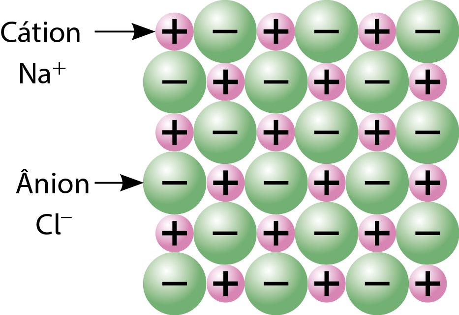
Figura 1. Representação de NaC l sólido. (Representação fora de proporção; cores meramente ilustrativas.)
Fonte: BURDGE, J. Chemistry. 6. ed. Nova York: McGraw-Hill, 2023. p. 365.
Quando o cloreto de sódio é dissolvido em água, os íons são separados devido às atrações eletrostáticas entre eles e as moléculas de água (comentadas logo a seguir), desfazendo-se o retículo cristalino iônico. Tanto os cátions (íons positivos) como os ânions (íons negativos) passam a estar rodeados de moléculas de água (Fig. 2) e, nessa situação, dizemos que tais íons estão solvatados.
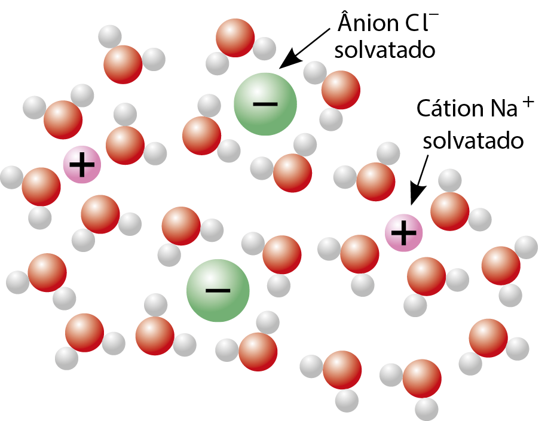
Figura 2. Representações de íons Na⁺ e C l⁻ em uma solução aquosa de NaC l. (Representação fora de proporção; cores meramente ilustrativas.)
Fonte: TRO, N. J. Introductory Chemistry. 7. ed. Harlow: Pearson, 2024. p. 482.
A separação dos íons de uma substância iônica que acontece quando ela se dissolve em água é chamada dissociação iônica e pode ser representada por uma equação química. No caso do NaC l, a equação química é:
Essa equação pode ser interpretada como: cloreto de sódio sólido, ao se dissolver em água, dissocia-se em cátions Na⁺ aquosos e ânions C l⁻ aquosos.
A molécula de água apresenta um dipolo elétrico (Capítulo 6). Assim, o oxigênio, que contém a carga parcial negativa nessa molécula, atrai os cátions do sal. Já o hidrogênio, que contém a carga parcial positiva, atrai os ânions. As atrações eletrostáticas entre os íons e os polos das moléculas de água com carga de sinal oposta à deles, denominadas interações (ou forças) íon-dipolo, são um dos fatores responsáveis pela dissociação iônica. Essas interações também acarretam o arranjo das moléculas de água ao redor de cada íon solvatado pela água (Fig. 2).
Um material pode conduzir corrente elétrica desde que apresente partículas eletricamente carregadas e dotadas de mobilidade. A solução aquosa de NaC l possui íons livres, Na⁺ (aq) e C l⁻ (aq), e isso explica o fato experimental de ela conduzir corrente elétrica. Misturas homogêneas condutoras de corrente são chamadas de soluções eletrolíticas.
A ureia, CH₄N₂O ou (NH₂)₂CO, é uma substância molecular, sólida a 25 °C e 1 atm, bastante solúvel em água. Quando a ureia está sólida, suas moléculas estão organizadas em um retículo cristalino molecular (Fig. 3) com ligações de hidrogênio entre o átomo de oxigênio de uma molécula e o átomo de hidrogênio que esteja ligado ao nitrogênio em outra molécula.
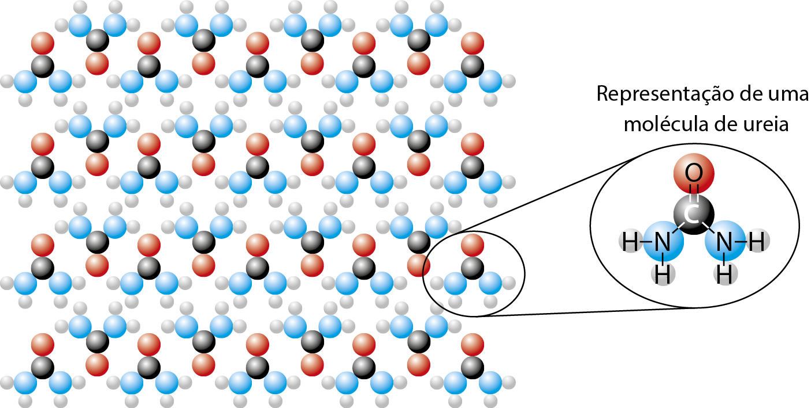
Figura 3. Representação da ureia sólida. (Representação fora de proporção; cores meramente ilustrativas.)
Fonte: JOHNSTON, K. et al. Assessment of GAFF and OPLS Force Fields for Urea: Crystal and Aqueous Solution Properties. Cryst. Growth Des. v. 24, n. 1, 2024. p. 143-158.
Quando a ureia é dissolvida em água, suas moléculas são separadas (em razão das intensas interações intermoleculares estabelecidas com as moléculas de água) e solvatadas (Fig. 4). A solvatação se deve às ligações de hidrogênio estabelecidas entre ureia e água, particularmente entre os átomos de hidrogênio (H) da água e o átomo de oxigênio (O) da ureia e entre os átomos de H da ureia e o átomo de O da água. Observe a esquematização (Fig. 4) que representa a disposição das moléculas de água ao redor de cada molécula solvatada.
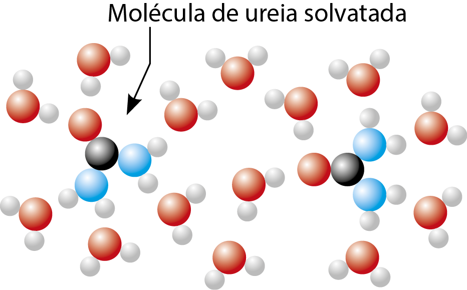
Figura 4. Representação da ureia em solução aquosa. (Representação fora de proporção; cores meramente ilustrativas.)
Fonte: PATRICK, G. An Introduction to Medicinal Chemistry. 7. ed. Oxford: Oxford University Press, 2023. E-book.
A dissolução da ureia em água é representada pela equação química a seguir.
Nesse caso, não há íons em solução, e isso explica por que a mistura homogênea de ureia e água (solução aquosa de ureia) não conduz corrente elétrica.
A substância cloreto de hidrogênio, HC l, gasosa a 25 °C e 1 atm, por sua vez, é molecular, bastante solúvel em água e reage com ela produzindo íons, que são solvatados pela água (Fig. 5). A equação química desse processo é:
HC l ( g) + H₂O ( l ) --> H₃O⁺ ( aq) + C l⁻ ( aq)
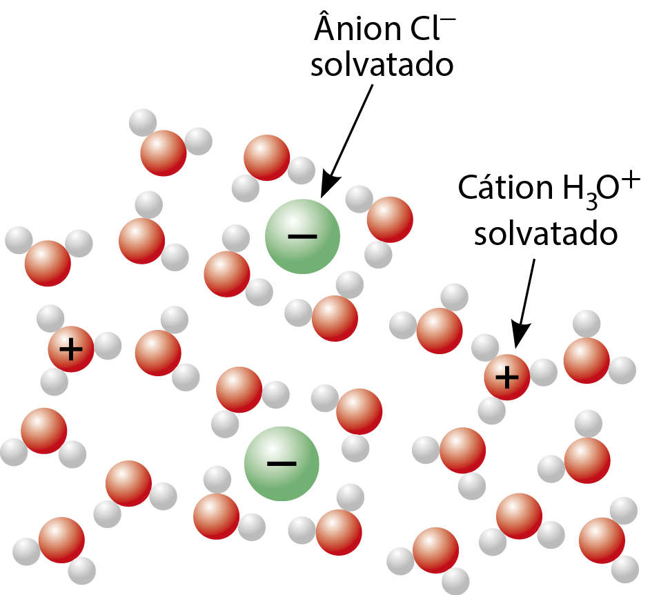
Figura 5. Representação de íons H₃O⁺ e C l⁻ em uma solução aquosa de HC l. (Representação fora de proporção; cores meramente ilustrativas.)
Fonte: KOTZ, J. et al . Chemistry & chemical reactivity. 11. ed. Boston: Cengage, 2023. p. 164.
Esse fenômeno recebe o nome de ionização, pois envolve a formação de íons. Também pode ser chamado de dissociação (mas, nesse caso, sem o adjetivo iônica). A ligação covalente H ⏤ C l é rompida e o par de elétrons anteriormente compartilhado permanece agora com o átomo de cloro, mais eletronegativo, que se transforma em ânion C l⁻. O hidrogênio transforma-se em cátion H⁺ e liga-se a uma molécula de água, formando o cátion H₃O⁺. A solução aquosa contém íons e é condutora de corrente elétrica. É comum os químicos representarem, resumidamente, a ionização do HC l com a equação química a seguir.
É importante ter em mente que o H⁺ (aq) não tem existência individual, mas liga-se à água, constituindo cátion denominado oxônio, H₃ O⁺ (aq).Exercícios
1. As interações íon-dipolo têm papel relevante na formação de uma solução aquosa do composto iônico brometo de potássio (KBr). Esclareça esse papel e represente, esquematicamente, a disposição das moléculas que solvatam cada íon.
2. Um dos fatores responsáveis pela solubilização da ureia em água são as diversas ligações estabelecidas entre suas moléculas e as de água. Explique que ligações são essas e represente-as, empregando fórmulas estruturais das moléculas envolvidas.
3. Em uma solução aquosa de brometo de hidrogênio (HBr), as interações entre ânions Br⁻ e as moléculas que o solvatam são de tipo diferente das que ocorrem entre cátions H₃O⁺ e as moléculas que o solvatam. Elaborando esquemas representativos apropriados, explique essa diferença.
4. Durante uma pesquisa, um grupo de estudantes verificou que os processos que ocorrem quando etanol líquido (I), glicose sólida (II), ácido acético líquido (III), amônia gasosa (IV) e brometo de potássio sólido ( V ) se dissolvem em água são assim equacionados:
I . C₂H₅OH ( l) → C₂H₅OH (aq)
II. C₆H₁₂O₆ (s) → C₆H₁₂O₆ (aq)
III. CH₃COOH ( l) + H₂O ( l) → H₃O⁺ (aq) + CH₃COO⁻ (aq)
IV. NH₃ (g) + H₂O ( l) → NH₄⁺ (aq) + OH⁻ (aq)
V . KBr (s) → K⁺ (aq) + Br⁻ (aq)
- a. Esclareça quais das soluções aquosas obtidas podem ser consideradas eletrolíticas e justifique.
- b. Algum dos processos é dissociação iônica? E ionização? Sustente com argumentação adequada.
5. (Fuvest-SP) Entre as figuras a seguir, a que melhor representa a distribuição das partículas de soluto e de solvente, numa solução aquosa diluída de cloreto de sódio, é:
- a.
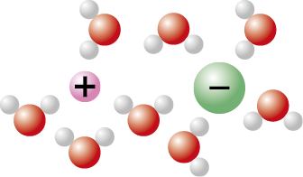
- b.
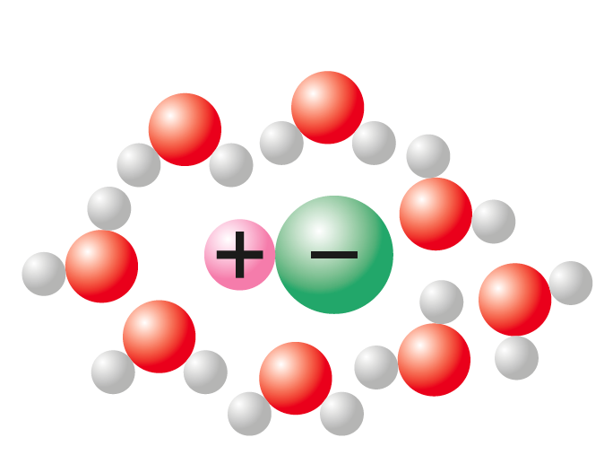
- c.
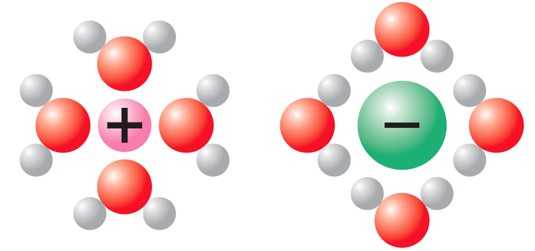
- d.
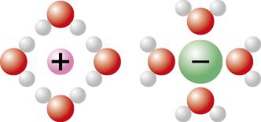
- e.
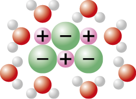
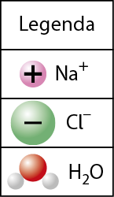
Algumas propriedades de ácidos e bases
Há mais de duzentos anos, os químicos já haviam percebido que existem alguns materiais que compartilham as seguintes propriedades: corroem mármore, ferro e zinco, avermelham suco de uva ou de amora quando misturados com eles e, em contato com a pele, podem provocar dor intensa e lesões graves. Esses materiais foram genericamente denominados ácidos (palavra que vem do latim, com o significado original de “desagradável”, “azedo”).
Esses estudiosos também haviam constatado que alguns materiais têm as seguintes características em comum: azulam suco de uva ou amora e deixam a pele escorregadia (com sensação tátil semelhante à da pele ensaboada), provocando dor intensa e lesões sérias. Esses materiais foram denominados bases.
As lesões na pele acontecem porque ácidos e bases podem reagir com substâncias nela existentes e, ao destruí-las, acarretar ferimentos que, dependendo do caso, podem ser muito graves e até levar a pessoa atingida à morte.
Embora a maioria das substâncias químicas não se encaixe em nenhum desses dois grupos, ácidos ou bases, há diversos outros reagentes químicos (as substâncias químicas empregadas em laboratórios e indústrias) que também podem oferecer riscos se inalados, ingeridos ou se entrarem em contato com pele e olhos. Por isso, você nunca deve manipular um reagente químico sem autorização e supervisão do professor e sem conhecer as características desse reagente, que riscos oferece, que procedimentos devem ser adotados para sua manipulação e seu descarte e que medidas devem ser tomadas em caso de acidente.
No caso de um material ser ácido ou básico, isso pode ser constatado com a utilização de um indicador ácido-base apropriado, substância que apresenta determinada coloração quando em contato com um material ácido e outra quando em contato com um material básico. O suco de uva e o suco de amora são exemplos de indicadores ácido-base. A fenolftaleína e o tornassol são indicadores ácido-base frequentemente usados em laboratório.
- A fenolftaleína forma solução incolor em meio ácido e rósea/vermelha em meio básico.
- O tornassol é vermelho em meio ácido e azul em meio básico.
A fenolftaleína é usada em solução (geralmente feita dissolvendo-a em álcool etílico). Algumas gotas podem ser adicionadas a um tubo de ensaio com solução aquosa do que se deseja testar (Fig. 6).
O papel de tornassol é comercializado, geralmente em lojas de produtos químicos, em duas versões: o azul e o vermelho (Fig. 7). Ambos consistem em tirinhas de papel contendo esse indicador.
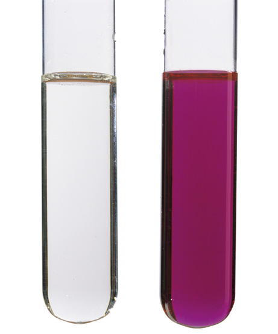
Figura 6. A solução com fenolftaleína permanece incolor em meio ácido e adquire coloração rósea/avermelhada em meio básico.
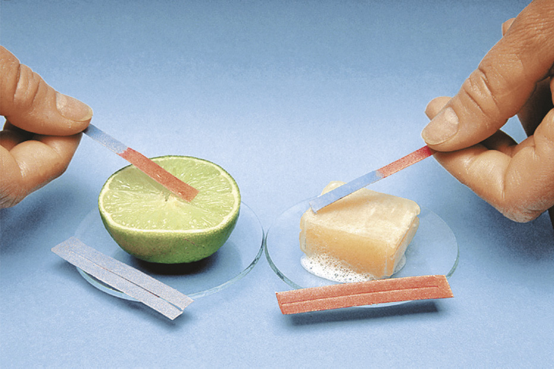
Figura 7. Materiais ácidos (como suco de limão) avermelham o papel de tornassol azul (à esquerda), e materiais básicos (como sabão em barra umedecido) azulam o papel de tornassol vermelho (à direita).
O papel de tornassol azul foi submetido, durante sua fabricação, ao contato com uma base, ficando azulado. Em laboratório, esse papel é usado para testar se certo material é ácido, pois ácidos fazem sua cor mudar para vermelho.
O papel de tornassol vermelho, diferentemente do azul, tomou contato, ao ser industrializado, com um ácido e ficou avermelhado. É útil, portanto, para indicar se determinado material é básico, pois, nesse caso, sua cor se altera para azul.
Existem diversos indicadores ácido-base naturais. Além dos sucos de uva e amora, já citados, e do tornassol, que é extraído de um líquen, é interessante mencionar mais dois exemplos. Um deles é a solução obtida quando folhas picadas de repolho roxo são mantidas por cerca de 5 minutos em água em ebulição. Após deixar esfriar e coar para remover as folhas, a solução, denominada extrato de repolho roxo (Fig. 8), atua como indicador ácido-base, adquirindo cor vermelha ou rósea em meio ácido, verde ou amarela em meio básico e permanecendo roxa em meio neutro (isto é, um meio que não é ácido nem básico). Outro caso é o das pétalas da flor hortênsia, que também contêm um indicador ácido-base natural (Fig. 9); a cor das pétalas varia dependendo da acidez ou da alcalinidade das pétalas.
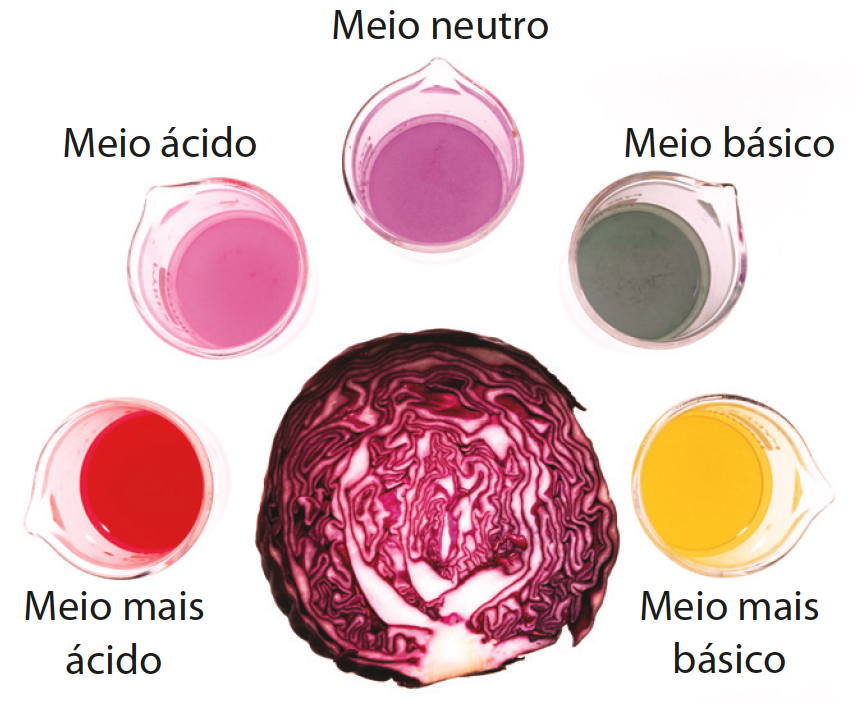
Figura 8. O extrato de repolho roxo atua como indicador ácido-base. Em meio ácido é vermelho/róseo e em meio básico é verde/amarelo.
Figura 9. Hortênsias têm indicadores ácido-base naturais nas pétalas, que adquirem tons de vermelho a azul dependendo de fatores (solo, adubação etc.) que afetam a acidez ou a basicidade das pétalas.